OWASP Top 10 (2025): OWASP Juice Shop Web App Pentest
A hands-on web application penetration testing walkthrough, mapped to the current OWASP Top 10:2025 and demonstrated through the intentionally vulnerable OWASP Juice Shop - each challenge exploited by hand, explained down to its root cause, and written up as a severity-rated finding.
What is OWASP Juice Shop?
OWASP Juice Shop is an open-source, intentionally vulnerable web application maintained by OWASP. It is a modern single-page shop (an Angular front end on a Node.js/Express back end) deliberately seeded with dozens of real-world security bugs, from SQL injection and cross-site scripting to broken access control and cryptographic mistakes. Every bug is packaged as a "challenge" tracked on a hidden Score Board, which makes it a safe and legal target for practicing web application testing end to end. Because the vulnerabilities map cleanly onto the OWASP Top 10, it is one of the best environments to learn how each risk is found, exploited, and remediated.
This guide runs Juice Shop locally on Kali Linux and drives every attack through an intercepting proxy, exactly as you would against a real client's application, just against a target that is intentionally broken and legal to test.
Objective
This write-up is a guide to how each category of the OWASP Top 10 can be demonstrated in practice against a live web target. The goal is that it can be followed, or used as a reference, to understand why each item sits in the ten most critical web risks, how it is exploited, and how it would be remediated.
This write-up maps to the OWASP Top 10:2025, the current edition. The 2025 list reordered several risks and added new categories (Software Supply Chain Failures, and Mishandling of Exceptional Conditions), so the numbering here differs from older 2021 guides:
- A01 Broken Access Control - users acting outside their intended permissions.
- A02 Security Misconfiguration - insecure defaults, exposed features, missing hardening.
- A03 Software Supply Chain Failures - risk from third-party and dependency components (absorbs the old "Vulnerable & Outdated Components").
- A04 Cryptographic Failures - weak or missing protection of sensitive data.
- A05 Injection - untrusted input executed as code (SQLi, XSS, command injection).
- A06 Insecure Design - flaws in the design itself, not just the implementation.
- A07 Authentication Failures - weak login, credential, and session handling.
- A08 Software or Data Integrity Failures - trusting unverified data, updates, or tokens.
- A09 Security Logging & Alerting Failures - attacks that go undetected.
- A10 Mishandling of Exceptional Conditions - improper error handling that leaks internals or fails unsafely (new in 2025).
A second goal is that the report-writing and testing approach here can be reused when working with a real client on identifying flaws and recommending improvements in their application.
This guide is written in a Linux (Kali) environment. Juice Shop is run locally and all traffic is proxied through Burp Suite.
Methodology
Each section maps a Juice Shop challenge to its OWASP Top 10:2025 category. For every one we identify the vulnerability, exploit it by hand through the browser and Burp, explain the root cause (down to the vulnerable code where Juice Shop exposes it), and record a severity-rated finding:
- Recon & setup - run Juice Shop locally, proxy the browser through Burp, and fingerprint the stack (Angular front end, Node/Express back end) to know what protections exist by default.
- A01 Broken Access Control - IDOR on the basket endpoint (A01).
- A05 Injection - SQL injection authentication bypass and DOM-based XSS (A05).
- A10 Mishandling of Exceptional Conditions - improper error handling / information disclosure (A10).
- A02, A03, A04, A06-A09 - security misconfiguration, supply-chain / vulnerable components, cryptographic failures, insecure design, authentication failures, integrity (JWT) flaws, and logging gaps (added as each is completed).
Tools Used
- Burp Suite Community Edition (intercepting proxy - view, replay, and tamper with requests)
- FoxyProxy (browser extension to route traffic through Burp)
- Firefox Developer Tools (inspect the DOM, session/local storage)
- Wappalyzer (fingerprint the front-end framework and back end)
- OWASP Juice Shop (the intentionally vulnerable target, run locally on Node.js)
- Kali Linux (host environment)
- OWASP Top 10:2025 (the standard findings are mapped to)
A01 - Broken Access Control
ChallengeView Basket
The challenge is to view another user's shopping basket by changing the basket ID. Let's make an account for the website.
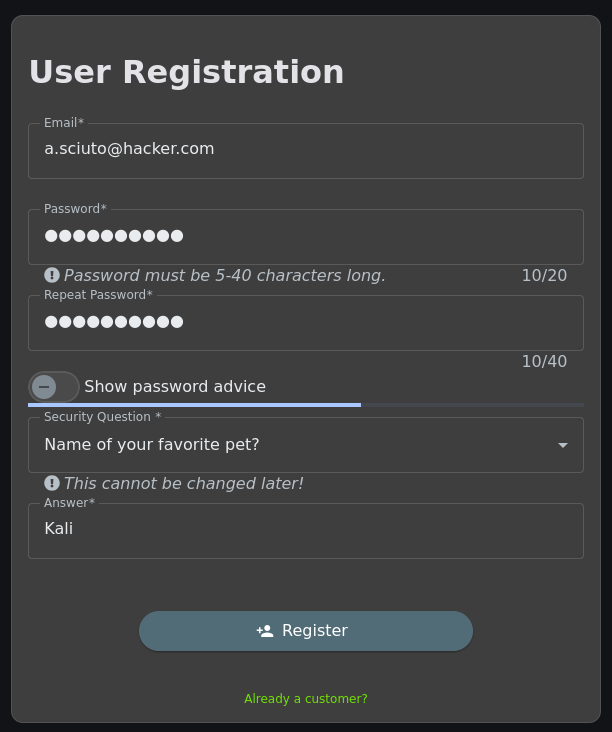
Next, let's add some items to our basket to confirm it's ours. For me, I added 12 Basil Smoothies as my unique basket, since I doubt another user has exactly that.
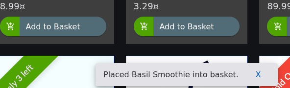
If we inspect the page and go to Storage, we can look around for any interesting values we can change.
Under Session Storage, I see a value called bid (basket ID) currently set
to 6.
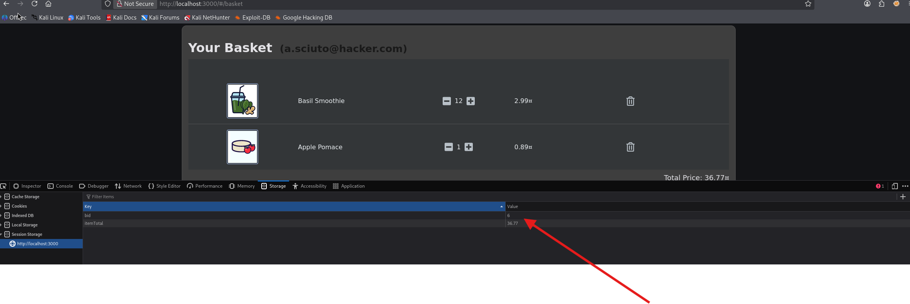
bid value in session storage.If we change it and refresh the page, let's see what happens.
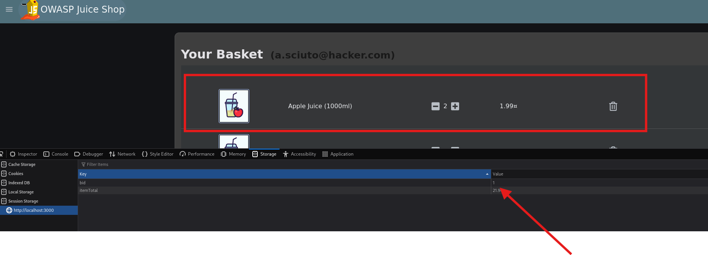
bid to another number.The basket contents changed, and we get some confetti with an achievement that we completed the challenge: View Basket!
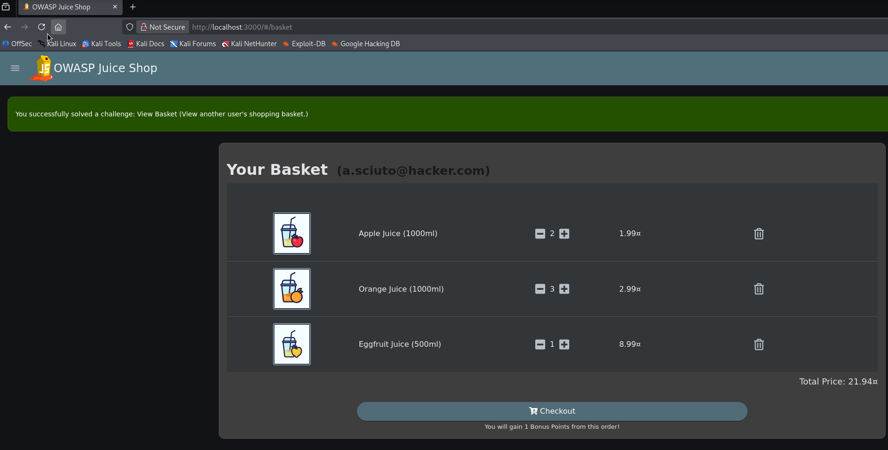
The server returns basket data for any basket ID we enter without checking whether we own that basket. The server trusts a client-supplied ID with no authorization check - the textbook definition of an Insecure Direct Object Reference (IDOR).
Replicating in Burp
Editing session storage is quick, but a purist could argue it's "just client-side tampering." Proving the same result at the HTTP layer shows the flaw is server-side and can't be dismissed. Let's turn FoxyProxy on, open Burp's Proxy tab, go to Juice Shop, and click the basket. Burp captures the request and we send it to Repeater.
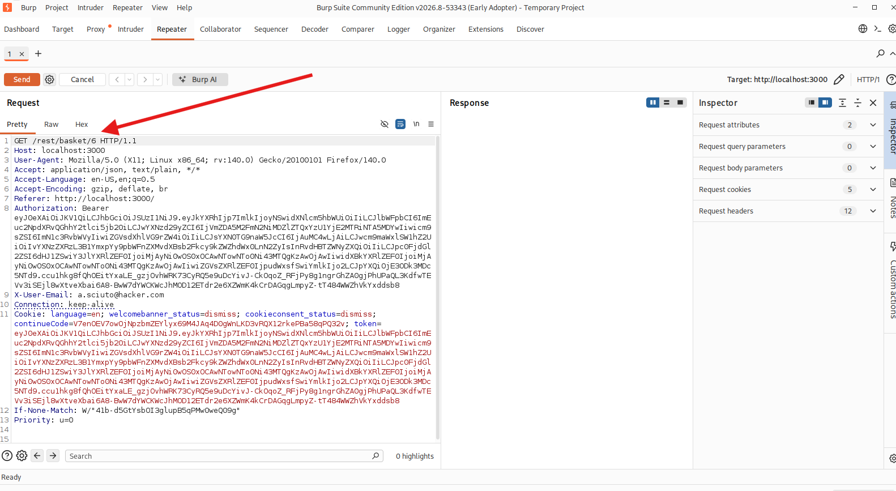
Here we see GET /rest/basket/6 HTTP/1.1. If we change the ID number and hit send, the
contents of the basket change just as they did earlier - straight from the server, with no session
storage involved.
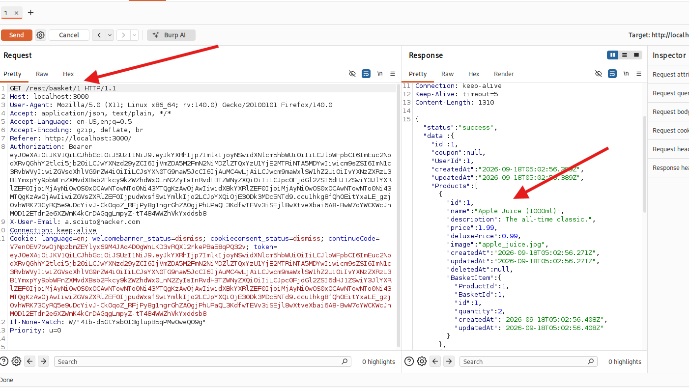
| Title | Insecure Direct Object Reference in Basket Retrieval |
|---|---|
| Category | Broken Access Control · OWASP A01:2025 · CWE-639 |
| Severity | High - unauthorized access to other users' data. |
| Description | The /rest/basket/{id} endpoint returns basket contents for any ID without verifying ownership. |
| Steps to reproduce | Log in, note your basket ID (session storage bid / the GET /rest/basket/{id} request), change it to another value, and the server returns a different user's basket. |
| Impact | Any authenticated user can view other customers' basket contents (privacy breach, customer data exposure). |
| Remediation | Enforce server-side authorization: verify the basket belongs to the authenticated user before returning it. |
A02 - Security Misconfiguration
TODO: Use a leftover/deprecated B2B interface that should have been disabled (insecure default left exposed). Write-up to follow.
A03 - Software Supply Chain Failures
TODO: Identify a known-vulnerable third-party JavaScript library the shop bundles (the 2025 successor to "Vulnerable & Outdated Components"). Write-up to follow.
A04 - Cryptographic Failures
TODO: Access a confidential file left in the /ftp directory (sensitive data exposure through missing access protection). Write-up to follow.
A05 - Injection
ChallengeLogin Admin (SQL Injection)
The challenge is to log in as admin via SQL injection in the email field, using ' OR 1=1--.
Login forms are the textbook SQLi target: our input is put into a database query that checks our
credentials. The quickest confirmation is to put a single quote in the field. If it errors out, that
tells us our quote is breaking the query's syntax - meaning our input is being treated as code, not
data.
First, let's log out if we're already logged in. Next, let's test for SQL injection in the email
field. The challenge tells us to use ' OR 1=1--, so let's try that with a random password of
test.
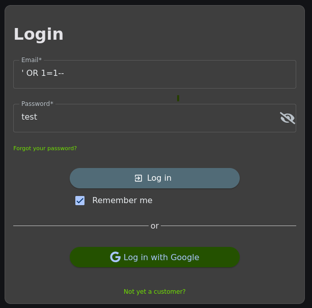
' OR 1=1-- in the email field.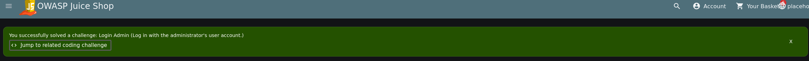
We got the achievement and completed the challenge. We can confirm by looking at our profile details: we're logged in as the admin account.
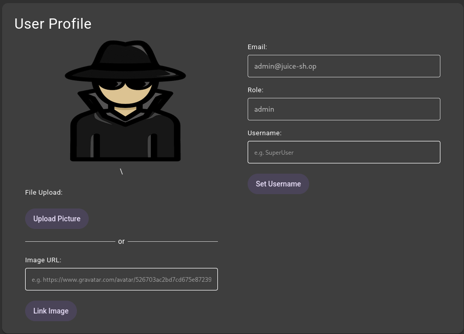
admin@juice-sh.op.The app concatenated our input directly into the SQL string instead of using parameterized queries. If
it were parameterized, ' OR 1=1-- would just become a search for an email literally equal to
the string ' OR 1=1--, which is nobody.
Why did ' OR 1=1-- work?
When anyone tries to log in, the server builds a query something like this:
SELECT * FROM Users WHERE email = 'INPUT' AND password = 'INPUT' AND deletedAt IS NULLWhen we enter ' OR 1=1-- in the email field, it becomes:
SELECT * FROM Users WHERE email = '' OR 1=1--' AND password = '...' ...What each part does:
'- closes the opening quote, soemail = ''(empty). This is us breaking out of the data and into the query's logic.OR 1=1- a condition that is always true. Because it'sOR, the wholeWHEREclause is now true for every row in the Users table.--- an SQL comment. It comments out the rest of the query, theAND password = '...'part, so the password check is completely ignored. That's why our password oftestdidn't matter.
How did we become admin from this?
The query returns all users (the condition is always true), and the app logs us in as the first row
returned - in this case the administrator (admin@juice-sh.op).
We can also target a specific user, for example victim@email.com'--. We can even try it
with our own registered email but a completely different password, and still log in. Let's enter
a.sciuto@hacker.com'-- as the email and hehe as the password. My password is
not hehe, but if the vulnerability is present (as we confirmed), it should log me
in:
SELECT * FROM Users WHERE email = 'a.sciuto@hacker.com'--' AND password = 'hehe'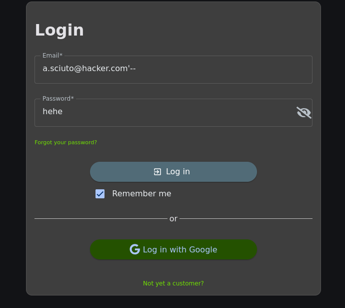
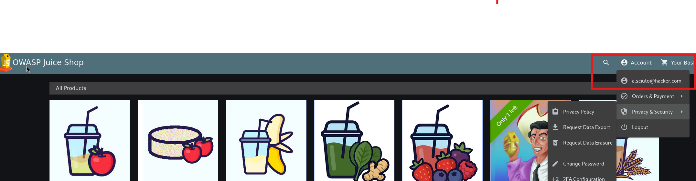
As further proof, we can find a user's email in one of the product reviews and log in as them:
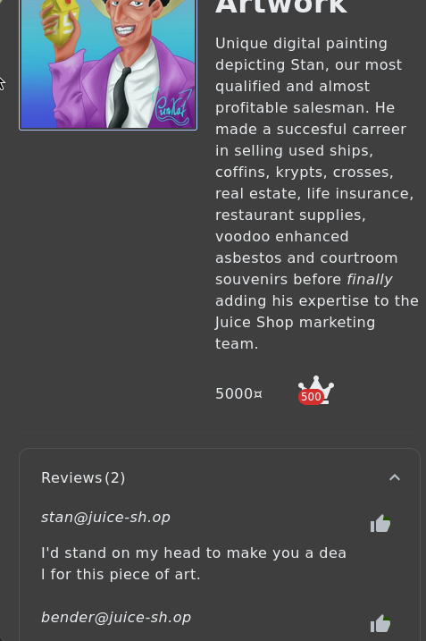
I like Futurama, so let's log in as bender with the email
bender@juice-sh.op'-- and a random password of shinymetal.
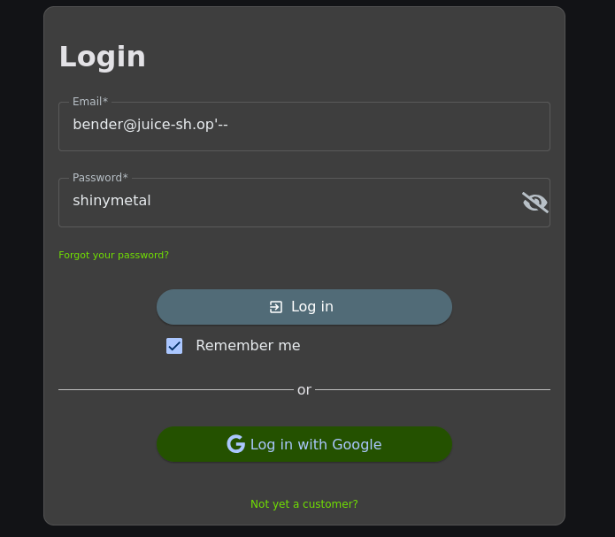
| Title | SQL Injection in Login (Authentication Bypass) |
|---|---|
| Category | Injection · OWASP A05:2025 · CWE-89 |
| Severity | Critical - full authentication bypass, admin access. |
| How discovered | Submitting ' in the email field caused a SQL error, confirming the input is concatenated into a query. |
| Payload | email = ' OR 1=1--, password = anything. |
| Why it works | The ' closes the email string, OR 1=1 makes the WHERE clause always true, and -- comments out the password check. The query returns all users and logs in as the first (admin). |
| Impact | Any attacker can log in as any user, including admin, with no valid credentials. |
| Remediation | Use parameterized queries / prepared statements so input is treated as data, not code. Add input validation and least-privilege database accounts. |
ChallengeDOM-Based Cross-Site Scripting (XSS)
The search bar is right on the main page, so let's enter our DOM XSS payload and hit enter:
<iframe src="javascript:alert(`xss`)">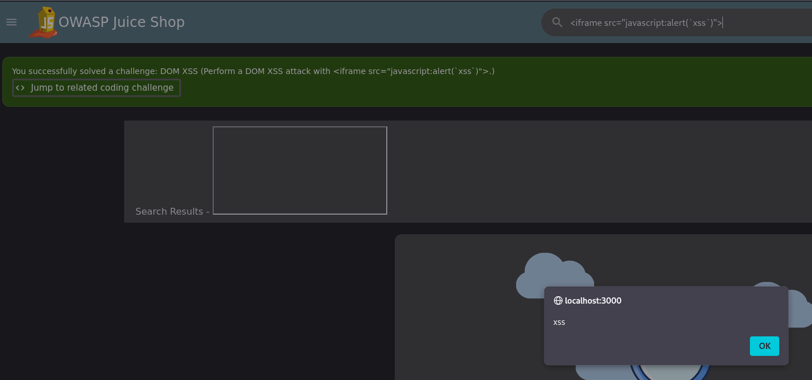
DOM XSS vs Reflected / Stored XSS
With Reflected or Stored XSS, the payload goes to the server and comes back in a response. With DOM XSS, the payload never reaches the server: the front-end JavaScript reads our input (from the search box or URL) and writes it into the page's DOM itself. The vulnerability lives entirely in the client-side code.
A note on the payload: <script> won't execute when inserted via innerHTML
(per the HTML5 spec, scripts added that way don't run), so we use an alternative vector - an
<iframe> with a javascript: URI.
Root cause shown in the code
Juice Shop attaches a coding challenge to this bug. It shows the vulnerable source and asks us to "click the line(s) containing the vulnerability."
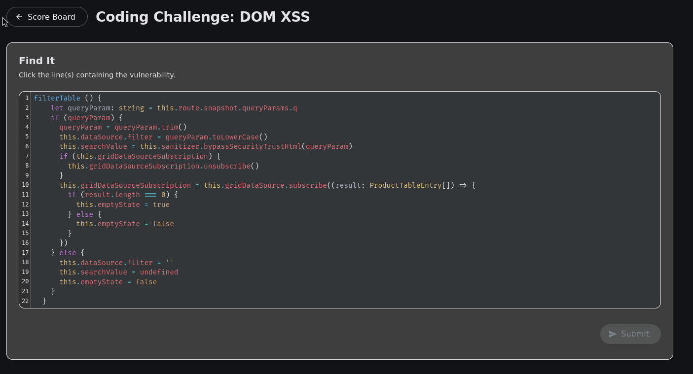
filterTable() code.Line 2 is the source - where untrusted input enters:
let queryParam = this.route.snapshot.queryParams.qThis reads the q parameter directly from the URL, which we control. Line 6 is the
sink - where the payload does damage:
this.searchValue = this.sanitizer.bypassSecurityTrustHtml(queryParam)It takes the untrusted queryParam and calls bypassSecurityTrustHtml, which
tells Angular (the front-end framework) to treat it as safe HTML and not sanitize it. searchValue
is then rendered into the page as HTML. Angular normally auto-escapes everything - which is why Angular
apps are generally XSS-safe - but this line switches that protection off for attacker input. (We can use
Wappalyzer to confirm Angular and research how it normally keeps XSS safe.)
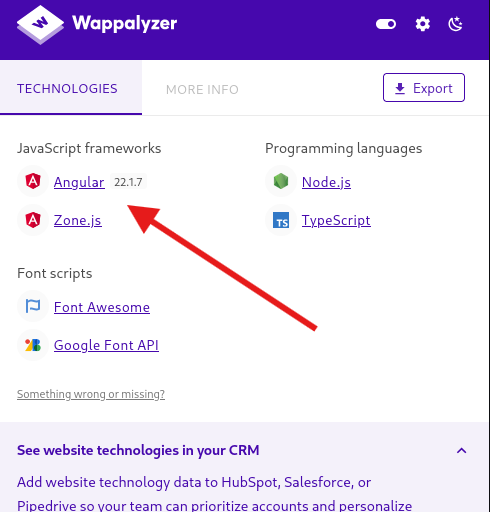
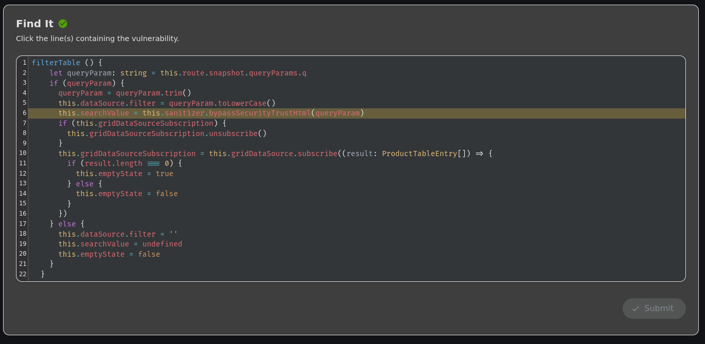
Fix It
After choosing line 6, we pick the code that would have prevented the vulnerability. The four options each keep the same method but change that one line:
Fix 1: this.searchValue = this.sanitizer.bypassSecurityTrustResourceUrl(queryParam)
Fix 2: this.searchValue = queryParam
Fix 3: this.sanitizer.bypassSecurityTrustScript(queryParam)
Fix 4: this.sanitizer.bypassSecurityTrustStyle(queryParam)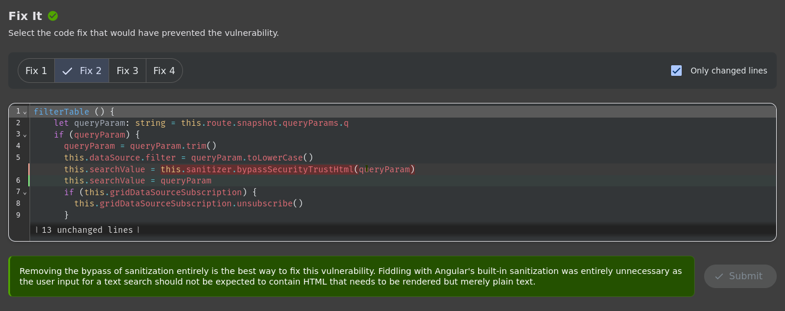
The correct answer is Fix 2. Juice Shop's own explanation: "Removing the bypass of sanitization entirely is the best way to fix this vulnerability. Fiddling with Angular's built-in sanitization was entirely unnecessary as the user input for a text search should not be expected to contain HTML that needs to be rendered but merely plain text."
- Fix 1 →
bypassSecurityTrustResourceUrl- still bypasses sanitization, just for URLs. Still trusts attacker input. ✗ - Fix 2 →
this.searchValue = queryParam- removes the bypass entirely and assigns the plain string. Angular's default auto-escaping now neutralizes the payload. ✓ - Fix 3 →
bypassSecurityTrustScript- bypasses for the script context. Arguably the worst option. ✗ - Fix 4 →
bypassSecurityTrustStyle- bypasses for style. Still a bypass. ✗
The fix is to simply stop bypassing and let the framework do its default escaping.
| Title | DOM-Based Cross-Site Scripting in Search |
|---|---|
| Category | Injection (XSS) · OWASP A05:2025 · CWE-79 |
| Type | DOM-based (payload rendered client-side, no server round-trip). |
| Payload | <iframe src="javascript:alert(`xss`)"> in the search field. |
| Why this vector | <script> won't execute via innerHTML, so an iframe javascript: URI is used. |
| Root cause | The front end bypasses Angular's HTML sanitization (bypassSecurityTrustHtml) on an untrusted URL parameter (source line 2 → sink line 6). |
| Impact | Attacker-controlled JavaScript runs in the victim's session - session/JWT theft, account takeover, phishing redirects - delivered via a crafted search URL. |
| Remediation | Use framework-default output encoding; never bypass the sanitizer. Add a Content-Security-Policy as defense-in-depth. |
A06 - Insecure Design
TODO: Register a user with an empty email and password (the design permits an invalid account state). Write-up to follow.
A07 - Authentication Failures
TODO: Log in as admin by guessing the weak password (no SQLi); reset Jim's password via the forgot-password security question. Write-ups to follow.
A08 - Software or Data Integrity Failures
TODO: Forge an alg:none JWT to bypass signature verification. Write-up to follow.
A09 - Security Logging & Alerting Failures
TODO: Access the server's access-log file (logs exposed rather than protected and monitored). Write-up to follow.
A10 - Mishandling of Exceptional Conditions
ChallengeError Handling
Heads-up on numbering: in the older 2021 list, verbose errors lived under Security Misconfiguration (A05:2021). The 2025 Top 10 adds a dedicated category - Mishandling of Exceptional Conditions (A10:2025) - that this finding maps to more precisely, though it still overlaps with Security Misconfiguration.
When testing for A05 Injection, I actually completed this challenge first, before the SQLi one. In the email field, we can prove the app mishandles errors by entering a single quote and anything for a password:
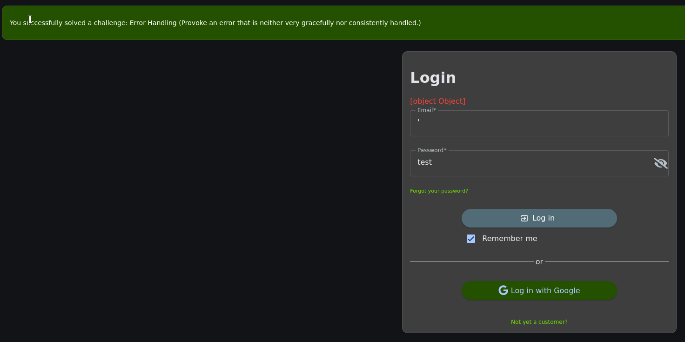
Placing a single quote in the email field broke something server-side, and we received a raw,
unhandled error of [object Object] - a JavaScript error object that wasn't properly handled
or turned into a string. An app that reveals raw errors like this is not handling them "gracefully or
consistently" (as the achievement banner stated). Verbose/raw errors leak internal information - stack
traces, SQL error messages, framework details, object structures - anything that helps an attacker.
What is a stack trace?
A stack trace is the list of function calls that led to an error - the program showing the exact path it took right before it crashed. When code hits an error, the runtime prints the "call stack": which function was running, which function called it, which called that, and so on, usually with file names and line numbers. An example in Node.js:
Error: SQLITE_ERROR: near "OR": syntax error
at Database.query (/home/kali/juice-shop/build/routes/login.js:42:15)
at handleLogin (/home/kali/juice-shop/build/app.js:118:9)
...Stack traces can expose file paths and directory structure, the database and frameworks in use, line numbers, function names, and more - free reconnaissance for an attacker.
| Title | Improper Error Handling / Information Disclosure |
|---|---|
| Category | Mishandling of Exceptional Conditions · OWASP A10:2025 · CWE-209 (Information Exposure Through an Error Message). Overlaps A02:2025 Security Misconfiguration. |
| Severity | Low-Medium - information disclosure that aids further attacks. |
| How discovered | Submitting ' in the login email field produced an error rendered as [object Object] rather than a graceful message. |
| Impact | Raw error output can leak internal details (object structures, SQL errors, stack traces) that help an attacker map and exploit the app. |
| Remediation | Catch and handle errors server-side; return generic user-facing messages; log details internally, never expose raw errors or stack traces to the client. |
This write-up is a work in progress - sections A01 (Broken Access Control), A05 (Injection), and A10 (Mishandling of Exceptional Conditions) are complete, with the remaining OWASP Top 10:2025 categories added as they're finished.